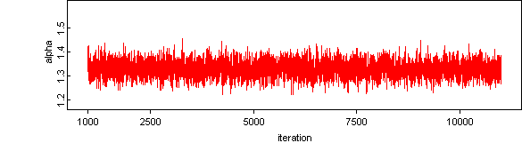
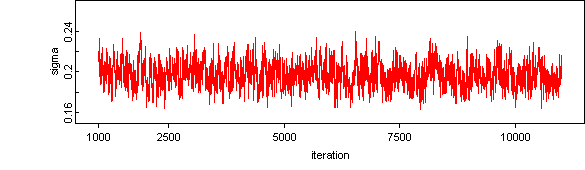

Scollnik, David P. M. , 'On composite lognormal-Pareto models', Scandinavian Actuarial Journal, 2007:1, pages 20 - 33
using the lognormal-pareto II model.
The data are fire insurance losses (in Danish Krone). The model is lognormal with mean mu and variance sigma when the losses (X) are less than an unknown parameter, theta, and pareto with parameter alpha when X is greater than theta.
The composite density is coded with BUGS functions and implemented using the 'logLike' distribution.
model{
for ( i in 1 : 2492){
dummy[i] <- 0
dummy[i] ~ dloglik(logLike[i])
logLike[i] <-
log(r/phi(alpha * sigma)) * ( 1 - stepxtheta[i] ) + log(1-r) * stepxtheta[i] +
( -0.5 * log(2 * pi) - log( x[i] ) - log( sigma ) - 0.5 * pow( (log(x[i])- mu)/ sigma, 2) ) *
( 1 - stepxtheta[i] ) +
( log(alpha) + alpha * log(theta) - (alpha+1)* log( x[i]) ) * stepxtheta[i]
stepxtheta[i] <- step( x[i] - theta )
}
theta ~ dgamma( 0.001, 0.001) # dexp( 0.5 ) #
alpha ~dgamma( 0.001, 0.001) # dexp( 0.5 ) #
sigma ~ dgamma(0.001, 0.001) # dexp( 0.5 ) #
r <- (sqrt(2*pi)*alpha*sigma*phi(alpha*sigma))
/(sqrt(2*pi)*alpha*sigma*phi(alpha*sigma)+exp(-0.5* pow(alpha* sigma,2)))
mu <- log(theta)- alpha*pow(sigma,2)
pi <-3.14159565
xf <- xa * delta + xb * ( 1 - delta )
xa ~ dlnorm( mu, tau ) I( , theta )
xb ~ dpar( alpha, theta )
delta ~ dbern( r )
tau <- 1/pow(sigma,2)
}
Data ( click to open )
Inits
Results
A 1000 update burn in followed by a further 10000 updates gave the parameter estimates:

![[fire2]](fire2.bmp)
mean sd MC_error val2.5pc median val97.5pc start sample
alpha 1.328 0.03179 7.257E-4 1.267 1.328 1.392 1001 10000
sigma 0.1971 0.01209 5.755E-4 0.1745 0.1966 0.2219 1001 10000
theta 1.209 0.03123 0.001505 1.153 1.207 1.273 1001 10000